Slide text
Speaker notes / extracted notes
Show slide thumbnails
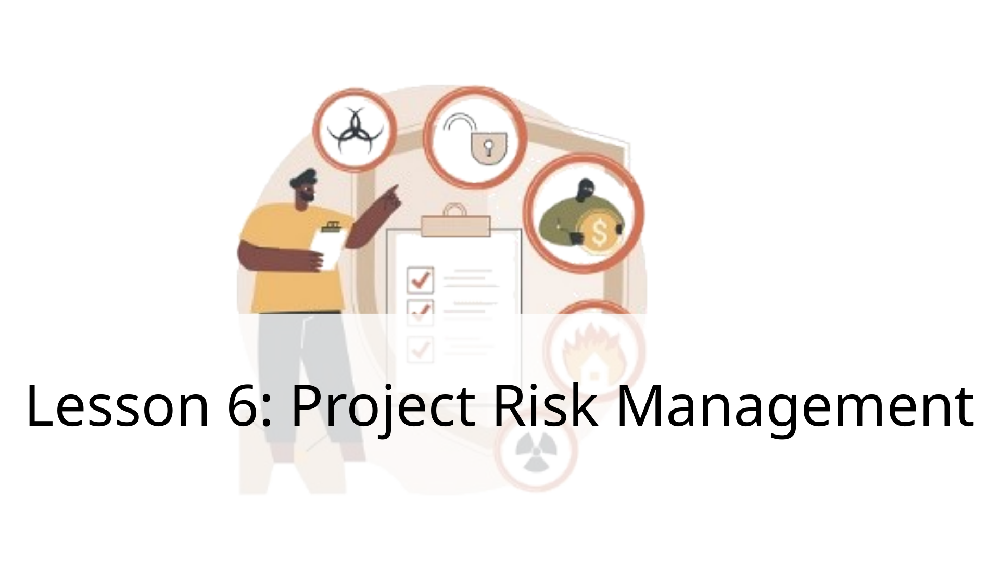
1. Lesson 6: Project Risk Management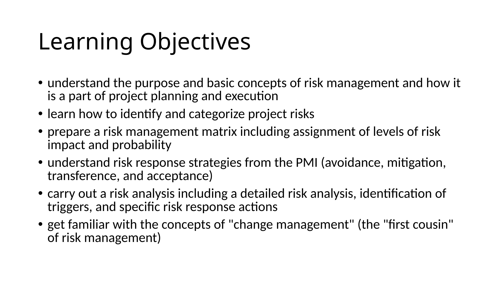
2. Learning Objectives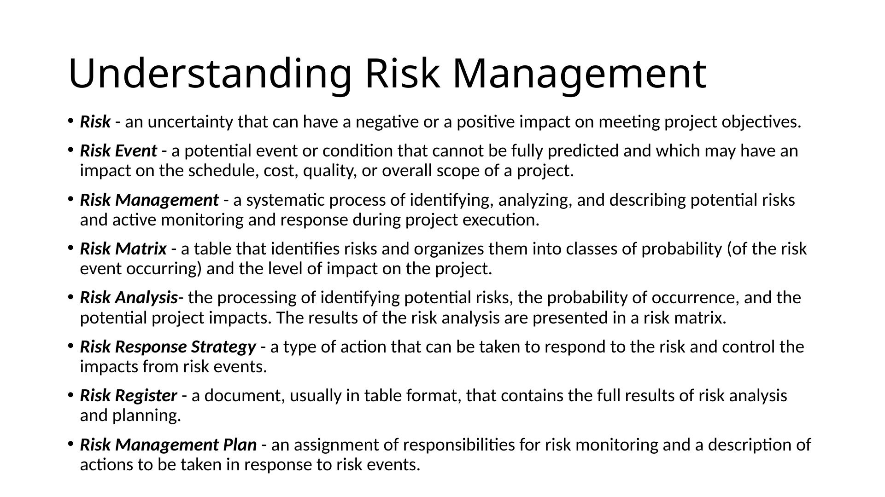
3. Assignment Schedule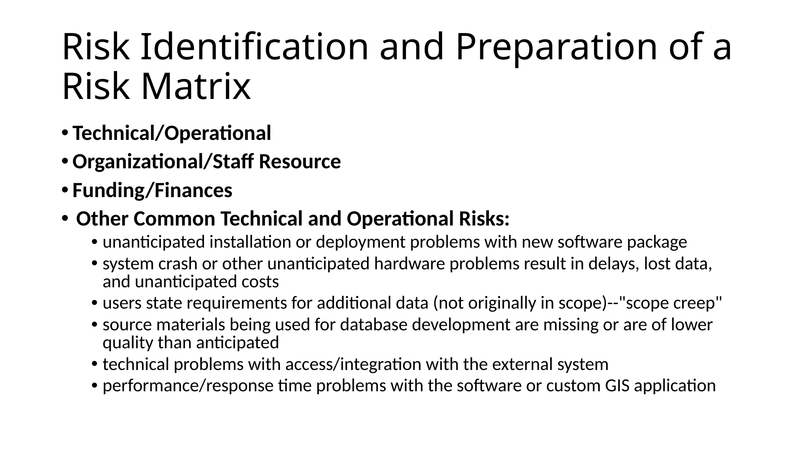
4. Next Assignment-Risk Management Plan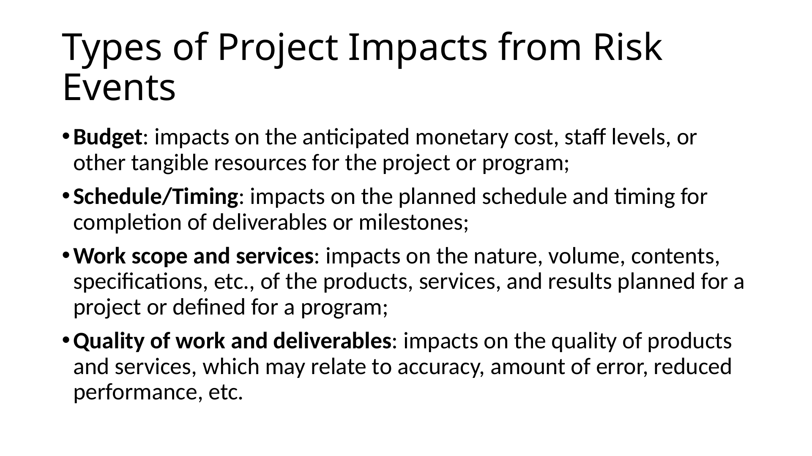
5. Understanding Risk Management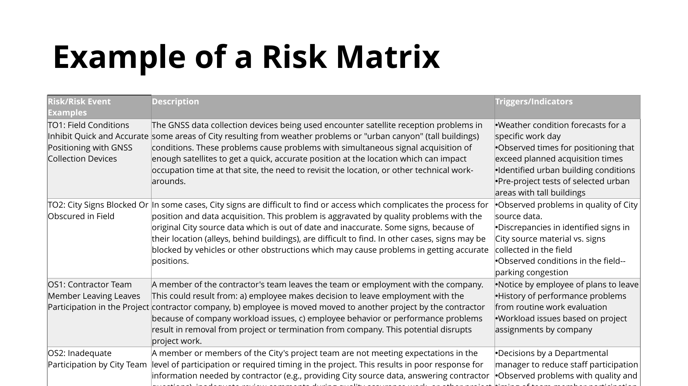
6. Risk Identification and Preparation of a Risk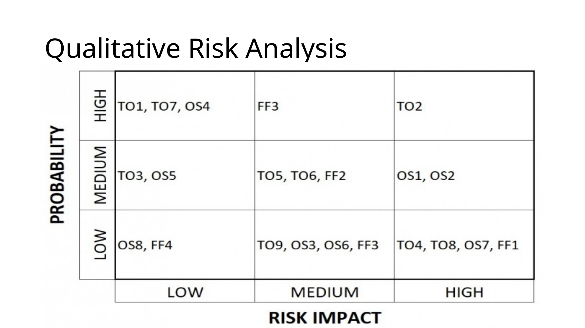
7. Types of Project Impacts from Risk Events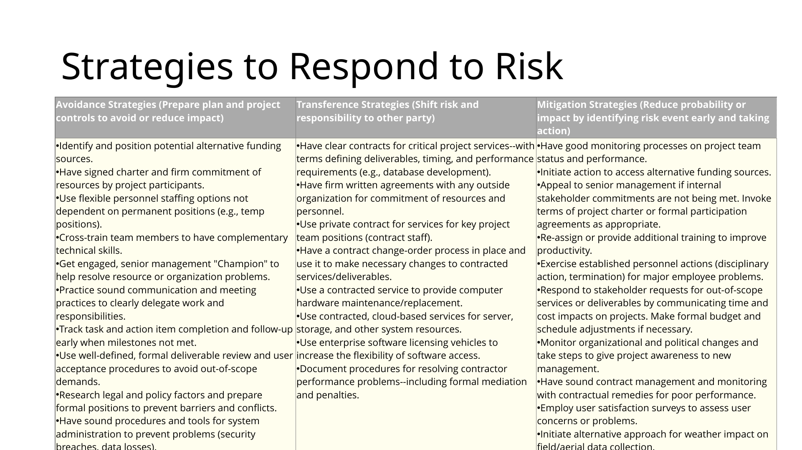
8. Example of a Risk Matrix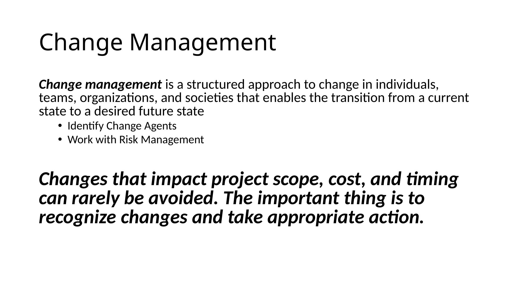
9. Qualitative Risk Analysis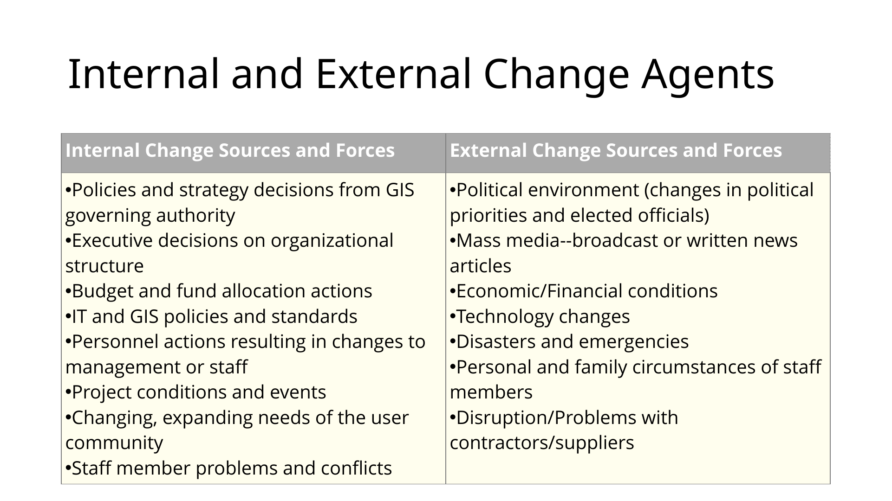
10. Strategies to Respond to Risk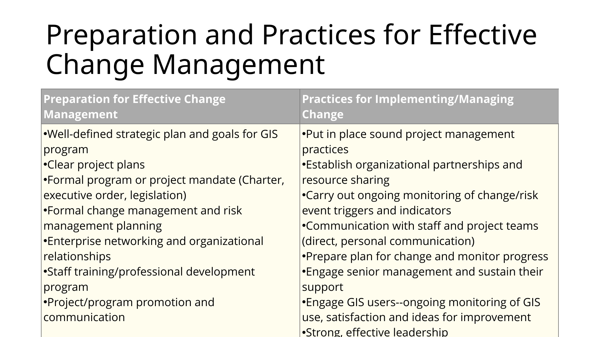
11. Change Management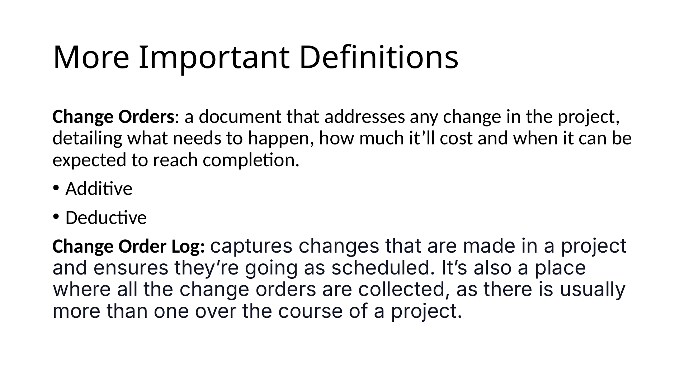
12. Internal and External Change Agents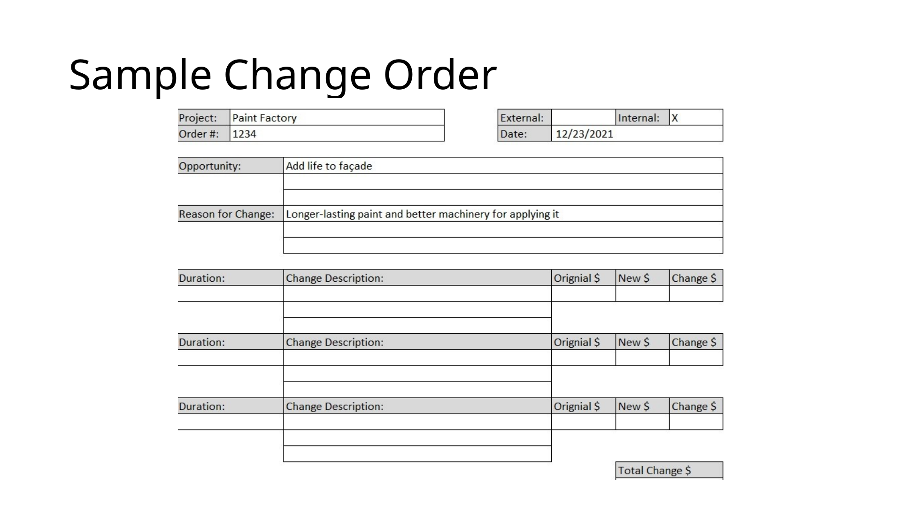
13. Preparation and Practices for Effective Chang